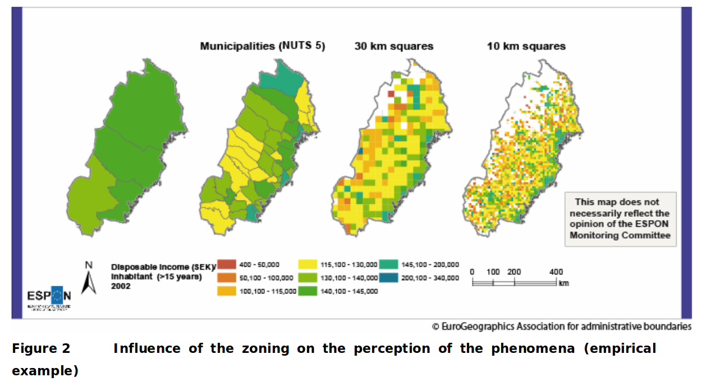

Chapitre 2 Difficultés de la statistique
Nous donnons ci-dessous quelques exemples de difficultés inhérentes à l’analyse statistique.
2.1 Plusieurs discours sont possibles
Les statistiques sont délicates parce qu’un.e statisticien.ne ne peut pas se limiter à des calculs et à la représentation graphique de ses données, mais doit également les décrire et les interpréter.
Cette interprétation est elle-même difficile car des discours différents peuvent être produits sur la base de chiffres identiques.
Considérons cet exemple, tiré du cours d’Ana-Maria Olteanu-Raimond :
Voici les chiffres du bilan d’une entreprise en 2013 et 2014
| Ouvriers | Cadres | |
|---|---|---|
| 2013 | effectif : 500 | effectif : 100 |
| salaire : 1300 | salaire :2200 | |
| 2014 | effectif : 200 | effectif : 400 |
| salaire :1170 | salaire : 1980 |
- Mme. AAA : «tous les salaires ont baissé de 10%»
- Mme. BBB : «le salaire moyen a augmenté d’environ 18%»
Ces deux phrases sont justes, et il n’y a pas lieu d’en choisir une plus que l’autre. Un.e analyste consciencieux.se se devrait de mentionner les deux à la fois !
2.2 Taille et représentativité de l’échantillon
Les données ne sont jamais exhaustives: elles sont le résultats de mesures, d’enquête et ne captent qu’une partie, un échantillon de l’ensemble des objets qu’elles décrivent.
La taille et la représentativité de cet échantillon sont critiques, et il est évident qu’on ne dit pas les mêmes choses à partir d’un petit échantillon partial qu’à partir d’un vaste échantillon représentatif.
Quand on en a la possibilité, il faut toujours privilégier les données les plus nombreuses et les plus représentatives du phénomène étudié.
Prenons un exemple avec des données “réelles” , on va calculer la hauteur moyenne des arbres de paris , dont le jeu de données est disponible ici
Après filtrage des données pour ne considérer que les arbres entre 1 et 40 mètres de hauteur, on va calculer la hauteur moyennes des arbres du dataset:
library(geojsonsf)
library(sf)
arbres <- geojson_sf("./data/les-arbres.geojson")
arbres <- filter(arbres, hauteurenm < 40 & hauteurenm > 1 )
mean(arbres$hauteurenm)## [1] 10.28588On va maintenant opérer une selection sur les données et ne considérer que les arbres étiquettés comme “jeunes” (variable statdedeveloppement), et calculer leur hauteur moyenne :
## [1] 5.691254Évidemment , la hauteur moyenne des jeunes arbres n’est pas la même que la hauteur moyenne des arbres en général!
Observons maintenant l’effet que peut avoir la taille de l’échantillon sur un calcul de moyenne :
On va prendre des échantillons du dataset des arbres de Paris de plus en plus petits (on divise par deux la taille de l’échantillons à chaque fois) et on va observer la variation de la hauteur moyenne des arbres de cet échantillon en fonction de la taille de l’échantillon.
Pour chaque taille d’échantillon , on réalise plusieurs tirages et on observe les valeurs moyennes de la hauteur en mètres sur ces échantillons
nbSpls <- nrow(arbres)
spls <- c()
while(nbSpls > 1){
nbSpls <- floor(nbSpls/2)
spls <- c(spls, nbSpls)
}
myfunc<- function(taille,data){
return(sample(data,taille,replace = F))
}
# tirage simple
samples_hauteur <- sapply(spls, myfunc, arbres$hauteurenm)
valeurs_moyennes <- sapply(samples_hauteur, mean)
names(valeurs_moyennes) <- spls %>% as.character()
#on répète fois le tirage
spls_sizes <- rep(spls, 50)
spl_h <- sapply(spls_sizes, myfunc, arbres$hauteurenm )
spl_moy <- sapply(spl_h, mean)
# constitution du dataframe
dfhmoy <- data.frame(spl_moy, spls_sizes)
dfhmoy$spls_sizes <- factor(dfhmoy$spls_sizes, levels=spls)
names(dfhmoy) <- c("h_moy", "spl_size")
#graphique
ggplot(dfhmoy ,aes(h_moy, spl_size))+
geom_boxplot()+
coord_flip()+
theme(axis.text.x = element_text(angle = 90, vjust = 0.5, hjust=1))+
labs(x="hauteur moyenne en mètre",
y="taille de l'échantillon",
title="Sensibilité de la moyenne à la taille de l'échantillon",
subtitle = "chaque échantillon est tiré 50 fois dans la population")
Ce graphique présente sous la forme d’un boxplot (ou boîte à moustaches), la distribution de la valeur des moyennes des hauteurs, calculées sur des échantillons dont la taille varie de 84508 individus, soit la moitié du dataset des arbres filtrés, à 1 individu.
Pour chaque taille d’échantillon, on réalise 50 tirages de cette même taille, pour éviter les “coups de chance”, et on calcule pour la moyenne pour chaque taille. On a donc calculé 50 valeurs de moyenne , pour chaque taille d’échantillon.
Pour voir comment la valeurs des 50 moyennes varie, on représente la distributions des valeurs de moyenne obtenues sous la forme d’un boxplot. Le boxplot montre l’étendue de la variation d’une variable quantitative . Plus la boîte est grande (étirée), plus les valeurs de la variable qu’il représente varient. Le trait noir au milieu représente la médiance des valeurs.
Sur notre graphique, on constate que la médiane des moyenne est très stable et est toujours proche de 10, mais que les tailles des boxplot sont très petites pour les grandes tailles d’échantillons (indiquant que la moyenne des hauteurs varie peu), et qu’au contraire , pour des tailles d’échantillons faibles (moins de 100 individus), la moyenne des hauteurs varie plus fortement.
Nous aborderons l’interprétation des boxplots dans le chapitre @ref(univariée) de façon plus précise.
Pour finir de se convaincre de ces variations, voici la représentation des valeurs moyennes en fonction de la taille des échantillons sous la forme d’un nuage de point:
ggplot(dfhmoy ,aes(h_moy, spl_size))+
geom_point(col="orange", size=0.5)+
coord_flip()+
theme(axis.text.x = element_text(angle = 90, vjust = 0.5, hjust=1))+
labs(x="hauteur moyenne en mètre",
y="taille de l'échantillon",
title="Hauteur moyenne en fonction de la taille d'échantillon",
subtitle = "chaque échantillon est tiré 50 fois dans la population")
2.3 Le paradoxe de Simpsons
Le paradoxe de Simpsons apparaît lorsqu’une population est structurée en groupes et que deux hypothèses contradictoires peuvent être formulées, suivant qu’on prenne en compte les appartenances des individus à ces groupes ou non.

source: wikipedia
Par exemple, le nuage de points animés ci-dessus, illustre comment on peut formuler deux hypothèses contradictoire concernant la même population :
- \(H_A\) : la variable \(x\) est corrélée négativement avec la variable \(y\)
- \(H_B\) : la variable \(x\) est corrélée positivement avec la variable \(y\)
\(H_A\) est valable si l’on considère les valeurs de la population dans son ensemble et sans tenir compte des groupes qui la structurent.
À l’intérieur de chaque groupe, \(H_B\) est valable et contredit \(H_A\).
2.4 Échelle individuelle vs. Échelle agrégée
Lorsqu’on manipule des données spatiales, le territoire sur lequel les données sont disponibles peut être découpé de plusieurs façons.
Par exemple, la France se découpe en régions, elles-mêmes décomposées en départements, eux-mêmes décomposés en commune.
Un jeu de données spatial est défini à un certain niveau de découpage spatial. Par exemple, on peut disposer du revenu mensuel moyen des foyers par commune, mais on ne dispose pas des données “brutes” qui y ont conduit: les revenus des personnes qui composent les foyer des communes.
Si on désire considérer la même variable à un niveau de découpage plus grossier (ici, les régions) ou plus fin (ici, les communes), on devra agréger ou désagréger les données.
L’agrégation est relativement directe , la désagrégation l’est beaucoup moins
Agrégation
On parle d’agrégation lorsqu’on désirer regrouper des données disponibles à un niveau de découpage donné Inférer des caractéristiques concernant les unités agrégées d’après les caractéristiques individuelles
Désagrégation ou Ventilation
On parle de désagrégation ou de ventilation de données lorsqu’à partir de données disponibles à un niveau de découpage donné, on cherche à simuler une répartition de données à un niveau de découpage plus fin, tout en restant cohérent avec la répartition des données au niveau de découpage originel.
Solution triviale donc sans intérêt:
Pour une variable de stock \(V_s\) (on dit aussi variable d’effectif) , i.e. mesurant une quantité d’objets, et en l’absence de toute autre données ou contraintes, on peut affecter aux \(n\) communes du département un nombre constant valant \(\frac{V_s}{n}\).
Pour une variable de ratio \(V_r\), on peut affecter le même ratio \(V_r\) à toutes les mailles qui composent la maille à désagréger.
Si on écarte la solution triviale, la désagrégation de données est une opération complexe, pour lesquels il existe cependant plusieurs méthodes de génération de population synthétique respectant certaines contraintes, comme l’Iterative Proportional Fitting
Les choses se compliquent encore si les découpages ne sont pas imbriqués les uns dans les autres. Généralement, on agrège les valeurs par des sommes pondérées par la surface des entités spatiales concernées. Un bon aperçu des méthodes d’allocation spatiale est donné dans ce document
2.5 À quelle échelle observer ? le MAUP
Puisqu’une même zone peut être découpée de différentes façons, avec des mailles de taille variable, susceptibles d’évoluer dans le temps (par exemple les limites adminsitratives des communes en France), toute question d’analyse spatiale (et donc d’analyse spatiale statistique) comporte une question spécifique à l’échelle d’observation : À quelle échelle observer nos données ?
Cette question peut se décomposer en deux sous-questions, liées :
- quel maillage utiliser ? Par exemple: une maille régulière carrée ou hexagonale, les contours adminsitratifs, les mailles IRIS ?
- quelle taille de maille choisir ?
Il est très difficile de répondre à ces questions dans l’absolu, c’est même un problème «insoluble» appelé le MAUP (Modifiable Areal Unit Problem).
Les raisons de cette impossibilité de déterminer le découpage idéal pour observer une donnée spatialisée sont nombreuses. En voici quelques unes, qui je pense sont les principales:
- La plupart des phénomènes d’intérêts sont multi-scalaires, c’est-à-dire qu’ils peuvent se produire et/ou s’observer à plusieurs niveaux d’échelle.
- L’agrégation peut faire disparaitre certains détails, certaines spécificités dans la cartographie des données.
- Des effets de la géométrie du découpage (appelés effets de zonage) modifie la représentation cartographique des données
Voici quelques exemples qui montrent ces difficultés.
2.5.1 Effet de zonage
Cette image tiré de la page wikipedia gerrymanding, illustre bien comment un découpage d’une même zone peut amener à des résultats de vote différents.

(#fig:img_gerryManding)Différentes manières de découper des circonscriptions électorales.
2.5.2 MAUP : exemples
Ces exemples sont tirés du rapport ESPON :
https://www.espon.eu/sites/default/files/attachments/espon343_maup_final_version2_nov_2006.pdf

Vous pouvez noter comme les zones du Sud en découpage NUTS 2 , sont représentées uniformément rose (valeur max du GDP/hab) alors qu’avec un découpage plus fin (NUTS 3), la situation du sud est loin d’être aussi uniforme : on note par exemple que la moitié Est des mailles du Sud-Est a des teintes plus mélangées dans le découpage NUTS3, avec un mélanges de mailles jaunes et bleues, que dans le découpage NUTS2 .
De même, les zones frontalières du Luxembourg et de la Belgique apparaissent plus pauvres (teintes jaunes et bleues) dans le découpage NUTS 3 que dans le découpage NUTS2.
De manière générale : l’agrégation va “lisser” les aspérités des données, certains contrastes ne «survivent pas» à l’agrégation spatiale.

Dans ce deuxième exemple, on voit la forme et la taille des mailles changer.
Là aussi, un effet de lissage, indissociable de l’agrégation, fait apparaitre certaines régions comme uniformes et cachent certains singularités: par exemple le fait que les zones les plus lointaines du littoral sont pauvres (teintes oranges à l’arrière du pays, Nord et Nord-Ouest) dans le découpage en mailles carrées de 30km n’apparait pas dans le découpage administratif(les deux vignettes de gauche), tout en longueur.
2.6 Rappel: La première “chose à faire”
Représenter/Tracer/Cartographier les variables de la population.
Cette exploration visuelle permet:
- d’identifier les intervalles de valeurs des variables, ou leur modalités
- de se faire une idée de la répartition des valeurs des variables à l’intérieur de leurs intervalles
- d’identifier des valeurs aberrantes
- d’observer pour les variables spatialisées , leur répartition dans l’espace
D’autre part, comme le montre l’exemple ci-dessous, les valeurs de statistiques peuvent être trompeuses, et discriminent beaucoup moins bien des situations qualitativement très différentes que notre œil :

Les valeurs chiffrées affichées sont la moyenne, l’écart-type et la corrélation des deux séries qui forment le nuage de points. Le chapitre suivant introduira ces notions.